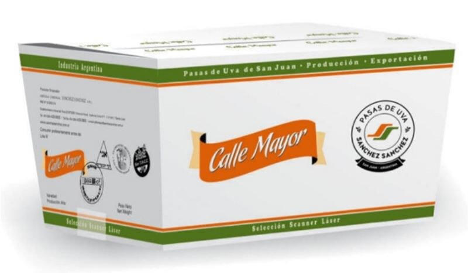
Calle Mayor
Caja x 10 kg · también en 32 lb y sachet x 200 g
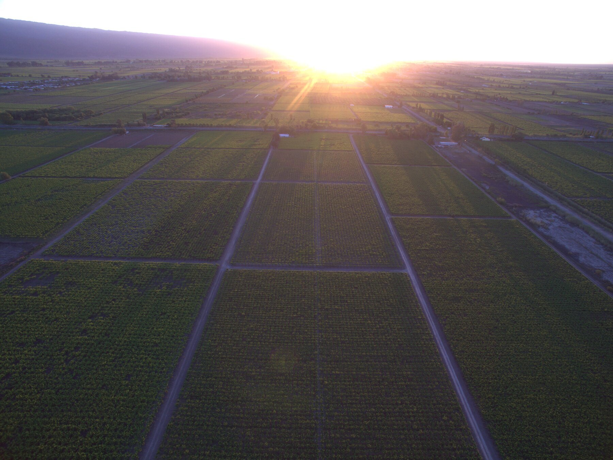
Santa Lucía · San Juan · Argentina
Somos una empresa familiar dedicada a la producción y exportación de pasas de uva sin semillas, secadas al sol del valle de Tulum. Calidad e inocuidad en cada paso, desde la finca hasta el puerto.
01 · Nosotros
Somos una empresa familiar con más de 30 años de trayectoria, dedicada a la producción y exportación de pasas de uva sin semillas. Nuestro compromiso con la calidad e inocuidad en toda la cadena de producción es el principal propósito del equipo de Agrícola Comercial Sánchez Sánchez.
Nos localizamos en el departamento de Santa Lucía, provincia de San Juan, en pleno valle de Tulum — donde vive el 97% de la población provincial. Un territorio árido, de clima desértico y grandes amplitudes térmicas: entre 40° y 45°C en verano, y entre 2° y 6°C en invierno. El agua que baja del deshielo de la Cordillera de los Andes es el recurso que hace posible todo lo que hacemos.
Esas condiciones ambientales son ideales para el cultivo de la vid y su desecación natural al sol, en predios acondicionados para obtener pasas de uva de excelente calidad.
Misión
Elaborar pasas de uva con calidad e inocuidad para satisfacer a nuestros actuales y potenciales clientes.
Visión
Ser una organización líder en producción de pasas de uva en la región, por su confiabilidad, innovación y crecimiento.
Ética
Contamos con un Código de Ética que fija las normas que regulan los comportamientos y conductas de todo el equipo.
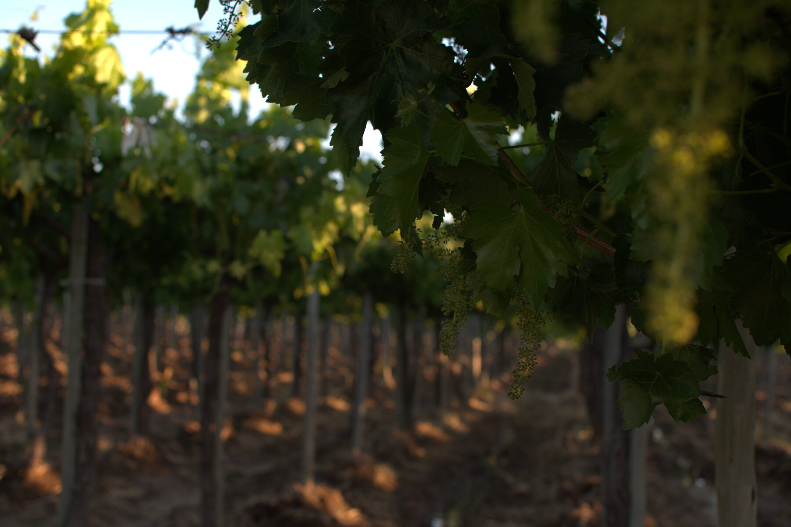
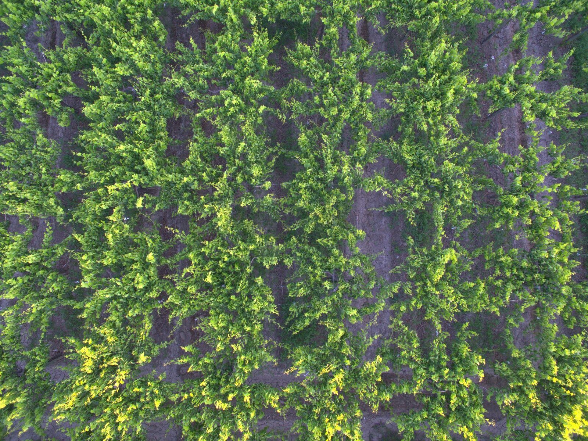
La mayor parte de nuestra producción proviene de fincas propias en Caucete, 25 de Mayo y 9 de Julio — departamentos de perfil rural intensivo de San Juan.
02 · Proceso productivo
El proceso se lleva a cabo bajo una norma estandarizada que asegura calidad y seguridad alimentaria, con tecnología de última generación: detectores de metales, rayos X y rayos láser.
Vendimia de las variedades Thompson, Flame y Superior Jumbo en el momento óptimo de madurez.
Desecación al sol del desierto sanjuanino, en predios acondicionados para preservar sabor y color.
Clasificación de la fruta según tamaño, color y calidad.
Detección de metales, rayos X y rayos láser sobre el 100% del producto.
Envasado en caja o sachet, según destino y formato requerido por el cliente.
Despacho a mercados de América, Europa y Asia bajo normas internacionales.
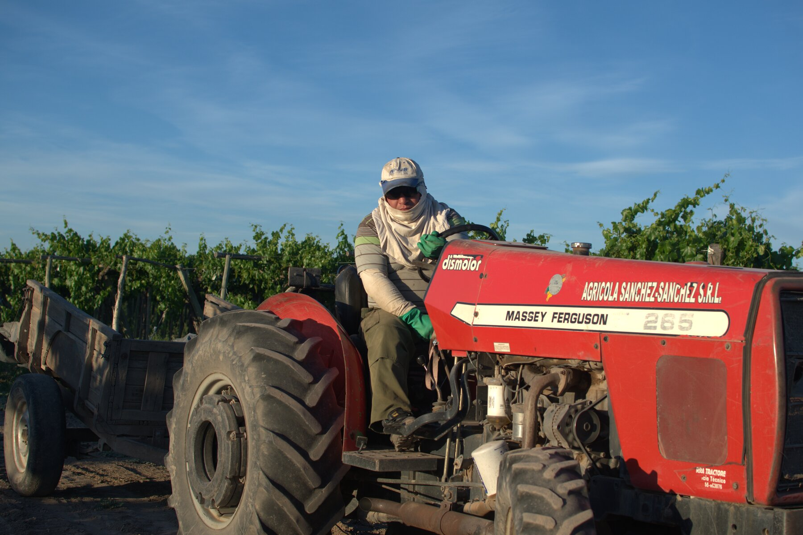
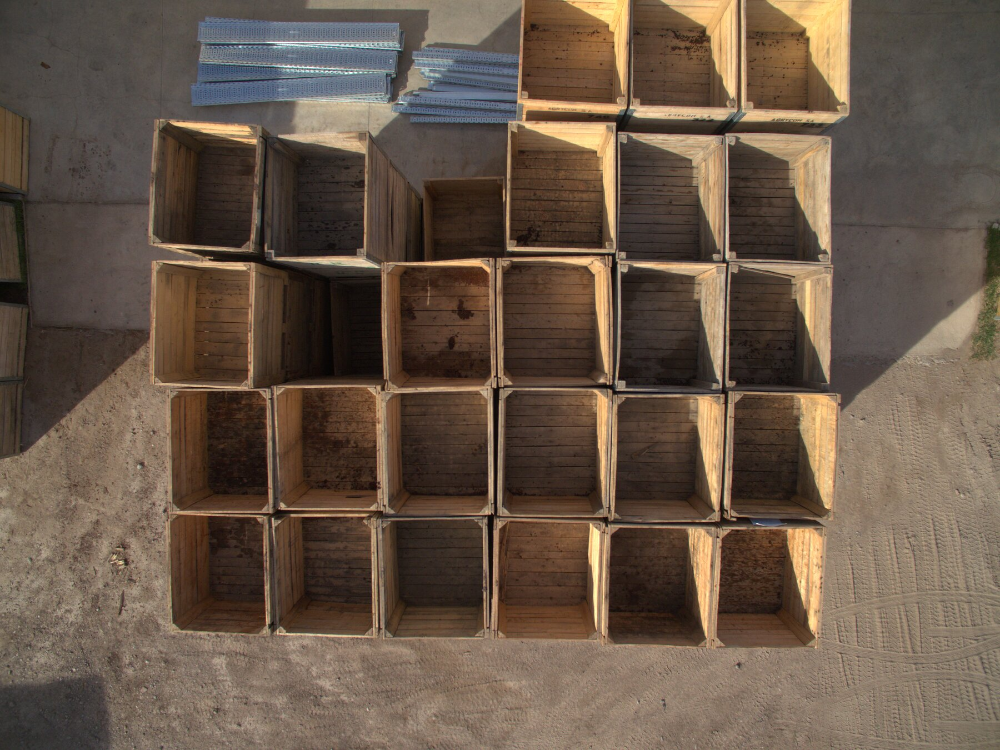
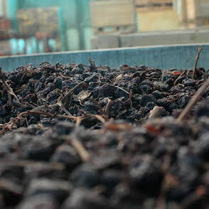
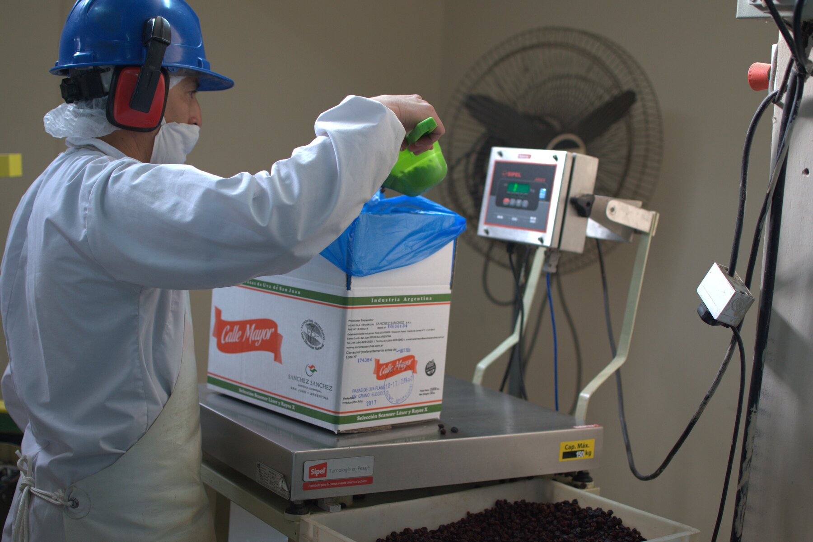
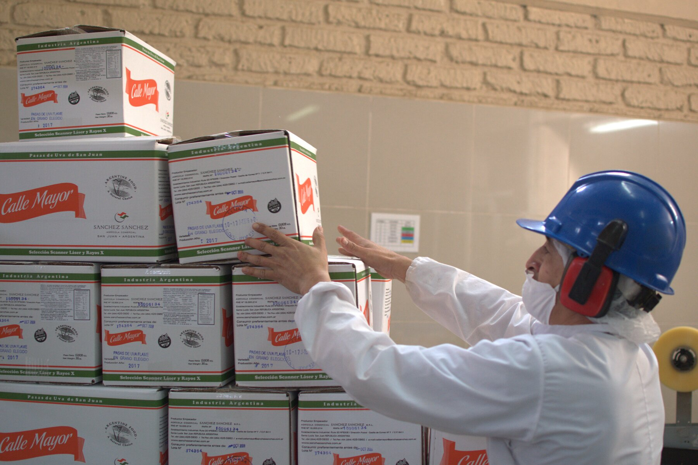
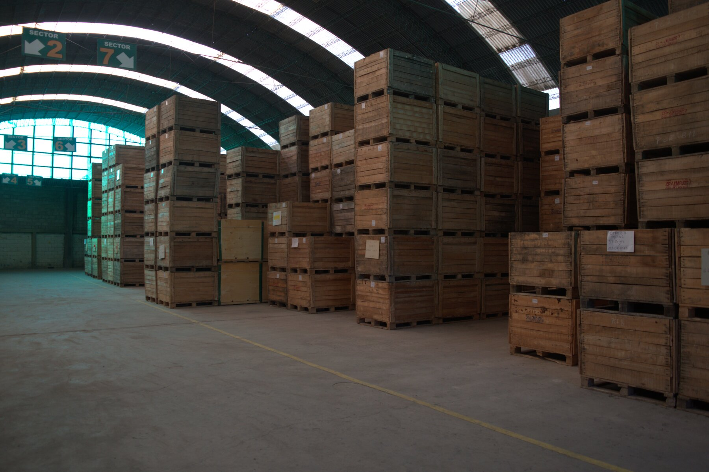
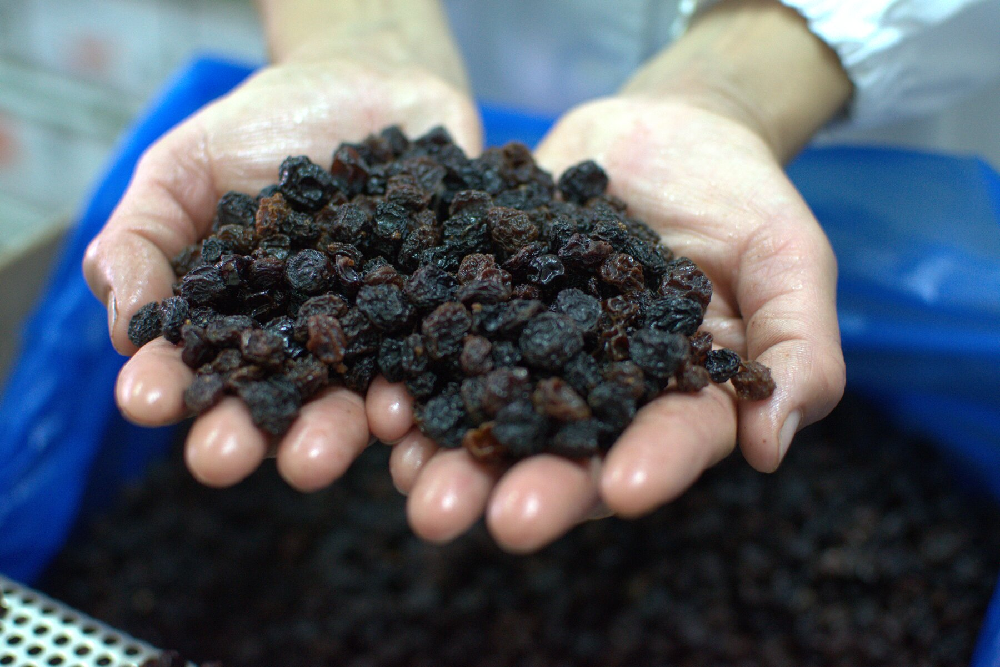
Cada puñado pasa por manos que conocen el oficio hace treinta años.
03 · Productos
Disponibles en distintos formatos y presentaciones, adaptados a mercado mayorista, distribución y exportación.

Caja x 10 kg · también en 32 lb y sachet x 200 g
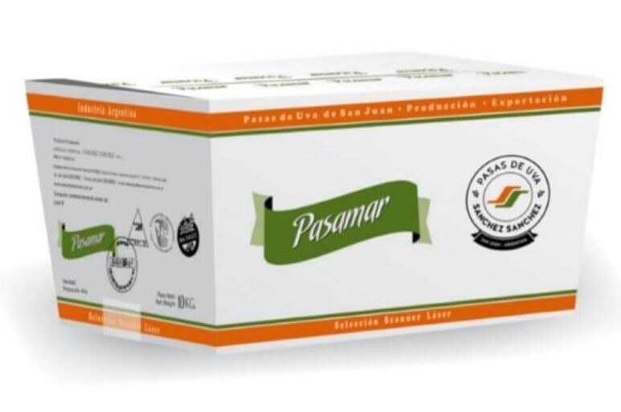
Caja x 10 kg · también en 32 lb
Catálogo ampliado
04 · Mercados
05 · Certificaciones
 BRC Global Standards
BRC Global Standards Kosher Foods
Kosher Foods Alimentos Argentinos
Alimentos Argentinos Producto sin TACC
Producto sin TACC Orgánico Argentina
Orgánico Argentina06 · Contacto
Dirección
Ruta 20 Nº 5303, CP 5411
Santa Lucía, San Juan, Argentina
Teléfono
+54 264 425-0930